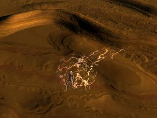
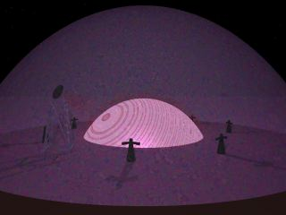

Episode V: 'Til They Glow |
|
Characters and players:
Blackhawk (Dave)
Chantille (Helen)
Frisbee (Lisa)
Prophet (Bryan)
Rolfo (Brian)
Sasfiry (Lisa)
Shizlink (Denny)
Sigmund (Denny)
Urk (Helen)
and introducing:
Al-Cur (Jason)
 ven heroes need their downtime. Whether to recover from wounds,
train in new skills, or, in Prophet's case, mount the teeth
of the Ordainer demon destroyed on the Pale in a suitable setting,
even heroes need their downtime. The party spent a day and a night
at Edwin's shop in Bazilar.
ven heroes need their downtime. Whether to recover from wounds,
train in new skills, or, in Prophet's case, mount the teeth
of the Ordainer demon destroyed on the Pale in a suitable setting,
even heroes need their downtime. The party spent a day and a night
at Edwin's shop in Bazilar.
Blackhawk's log, stardate 2493.2
Ever since I was affected by some kind of
energy transfer
from a dead Progenitor in the tomb beneath the mansion, I've felt...
different. I've noticed that psychokinetic delving since then has
resulted in stronger and sharper visions. Its as if my psionics have
gained in power. The teachers on Altha say that is not possible, a P5
will always be a P5. He can learn to make the most of his talent and can
use certain drugs for a temporary boost, but will always be a P5. Yet I
feel different...
I decided to put it to the test. The Progenitor artifacts are
incredibly advanced tech, and the bowl has a psionic control mechanism.
I started with it. I controlled my breathing and went into deep trance,
pushing down until I was in danger of becoming lost within my own mind.
Then my thoughts extended outwards. Probed psionically the bowl was a
smooth sphere which resisted attempts to reach inside. I backed away
from it and tried to make the tendrils of thought merge with the sphere
instead of penetrate it. I don't know how long I was in the fugue before
I felt a warmth and the opening of a vista in my mind as the sphere
dissipated and spread throughout.
When I emerged from the trance the bowl had morphed
into a skullcap. It fit perfectly.
The Narrator
Blackhawk had psionically attuned to the
bowl. Worn as
a skullcap he felt it amplifying his abilities [Editor's note: +30
to all Psionics]. With the bowl as a focus he was able to
psionically attune to the
Progenitor Holy Symbol
recovered from the mansion on the First Pale. He felt the presence of
many minds in the symbol, minds very much like his own. He also felt
that in certain circumstances he could call upon those minds for aid,
though exactly how or for what aid was not clear.
Finally, Blackhawk turned his attention to the 14"
crystal rod recovered from the Progenitor tomb. He was able to
psionically attune to it and fortunately was holding it correctly when
he did so. It is a weapon. The rod uses the mental energy of its
wielder to create a semi-corporeal sword blade. To Blackhawk the blade
appears as a shimmering white light while to everyone else it is
merely a distortion in the air.
Rolfo's commonplace traveling book
'aving a destiny is a such a wonderful thing. The big
human, Sigmunk, asked the lit'le gnome Edwin where 'e could buy a
magic sword. Edwin led 'im to a back room of 'is shop. 'ere was a
statue of a toad-faced demon with 'is mouth open wide 'olding a large
bowl. Even with 'is mouth open wide 'e still looked unhappy, demons
are like that I suppose even if they're statues.
Edwin said the statue was Bollinger's Everfull Bowl. You
put gold or jewels in 'is mouth and think about something magic you
want, and an item 'ill appear in the bowl. It might not be what you
want'd, but demons are like that I suppose.
This got everyone a bit excit'd. The tall funny-looking one,
Blackbird I think 'is name is, carried a 'eavy canvas bag into the
room and untied the drawstring. Inside was such a beautiful sight
I felt a bit light 'ead'd. It was full of emeralds! There must 'ave
been fifty pounds of emerald shards in the bag. The others start'd
talkin then about what to do, but I was so stunned by the sight I
didn't go over to inspect it.
The auburn-haired elfin woman, Sasaphras I think 'er name
is, gather'd up three quart'r pound of emeralds. Three quart'rs of a
pound! That's more money than I've ever seen in one place. I think its
more money than I've seen in a lot of lit'le places put together. She
wanted something to 'elp with 'ealing, and poured the emerald into
the toad's mouth. I sidl'd around behind it looking for the access
door, purely for the curiosity of it of course, but there wasn't one.
It must empty into a room underneath. Sasaphras reached in the bowl
and pulled out a branch about as long as me arm with ten berries on
it. I've never seen the like of it, and I've tended me herb garden for
too many years to count. The lit'le gnome said it was a mythical herb
called Menalar, an antidote for any poison. Sasaphras picked the
berries and took the branch out back to plant.
I'm certa'nly not one to begrudge a tasty berry, but I
think she paid a bit too much for 'em. But its not mine to say,
I suppose.
The lit'le fairy Shanty spent a long time shovelling emerald
shards inna tiny lit'le bag of holding she 'ad. Then she flew up to
th' mouth and poured 'em in. I think 'twas about a pound of emeralds
but it looks so strange to see so much pouring out of such a lit'le
bag I can't be sure. She wan'ed something to protect her from harm,
and pulled out a tiny cloak. The cloak made her invisible. I could've
used a cloak like that when I set up me little joke on Bill to make
'im think 'is burrow-pup 'ad chewed off me leg, that cloak is just big
enough to turn me leg invisible. Then I wouldn't 've had to dig a hole
in me yard to hide me leg and saved a lot of bother.
I stood for a moment with me mouth open wide but nobody
poured emeralds in 't.
Sigmunk poured another pound of emeralds into the toad's
mouth. It brought a tear to me eye. In me next life I hope to be born
a toad. 'e pulled out a sword that's taller than me. 'e seemed
pleased.
I've ne'er understood the fascination big humans 'ave for
even bigg'r swords. Personally I think they should find a 'obby, like
blowing smoke rings or something. But its not mine to say, I suppose.
The wide human, Lurk I think 'is name is, grabbed a handful of
emeralds. 'e was blubberin something about 'is frisbee. Seemed a
bit upset. 'e pulled a clear crystal out of the bowl. I couldn't get a
good look at it, Lurk ran out of the room right away, but I think it
was a diamond big enough to be worth a good bushel more than
what 'e poured in. He got a good shake, he did.
Then somethin unexpect'd happen'd. Sasaphras told me to grab
some emerald shards to put in the toad's mouth. I'd almost gotten
used to the idea of throwin vast amounts of wealth into a statue
until I got me hands on some meself. They were all looking at me
and expecting the gems t' go t' the toad, so I could only palm three
shards to admire lat'r. A bag of holding would be keen, I could
store a bushel each of me favorite pipeweeds in'it and have room
for me gear besides, so I thought on it really hard. Sigmunk lifted
me a bit to reach in th' bowl to pull out a flask. The flask holds ten
times what it looks to hold, which will be good for get'tin refills in
taverns I suppose.
The Narrator
The crystal Urk had received from Bollinger's bowl was
clear and tapered to smooth conical points on opposite sides. Edwin
would not reveal what the crystal was, saying only "Sometimes you
receive more than you ask for. You should feel blessed. It would be
best if she figure it out on her own." Placed on Frisbee's
forehead the crystal glowed brightly and began to sink into her skull
though there was no break in the skin. After several minutes Frisbee's
eyes fluttered open. She was very weak and disoriented. Half of the
crystal still protruded from her forehead.
As if on cue a courier arrived at Edwin's shop, informing
all present they had been summoned for an immediate audience with his
lordship Enkin, ruler of Bazilar. Walking through the city on the way
to the palace signs of change were everywhere. When the party had
last been in Bazilar it had been
a police state, with secret police enforcing order and burning entire
city blocks to punish the actions of a single dissident. Now the
streets were clean, the Coalition news kiosks were active, shops had
reopened, and the walls of the palace had been repaired. The palace
guards ushered the party through to the central meeting hall. Enkin
sat at one end of the great hall flanked by Ranix and Leneth. A group
of senior advisors and Coalition officers stood around a large central
table pointing to a map and discussing strategy.
Approaching the dais the party was greeted warmly by Enkin.
He thanked them for freeing him from the dungeon where he was being
held by his uncle, the usurper. Enkin's release had rallied and
inspired the resistance movement, leading them to retake Bazilar.
Enkin said that although his uncle had instigated the takeover he had
been pushed out of power by renegade elements of the Coalition working
behind the scenes. Merely a figurehead for the last few years, his
uncle had been killed two weeks before. Enkin and Ranix are still
trying to unravel the details of the conspiracy.
Enkin also announced his marriage to Leneth, Princess of
Darakon. Darakon is a planet outside of Coalition space at least four
jump points from Kulthea. Leneth had been held in the same dungeon as
Enkin and was freed at the same
time. She had provisioned ID cards for each member of the party
showing them as citizens of Darakon with permission to travel in
Coalition space. These would be very helpful if they ran into trouble
with Coalition authorities.
Blackhawk spoke to Leneth telepathically, a medium which
allows far greater exchange of information than speech. He relayed the
details of the parties' mission on the
First Pale including what had been
discovered about the Progenitors and the sighting of the Mendaline
sorcerer. Leneth knew of the Progenitors, who were revered in the
ancient myths of her people. The Progenitors had spread through much
of the galaxy eons ago and were remembered as benevolent rulers who
maintained balance and protected the younger races so they could
evolve undisturbed. The Progenitors had disappeared suddenly thousands
of years ago. No-one knows exactly what happened to them. Scholars on
her world believe the Progenitors ascended and no longer require a
physical form, though Leneth doesn't believe it. She also knew of the
Mendaline, a savage race which conquers and enslaves every species they
encounter. Her planet does not know the origin of the Mendaline
though she believes they are actually extra-dimensional, a fact
previously confirmed by Edwin. She thought the human in Blackhawk's
psychokinetic vision and the Mendaline sorcerer (who wore the same
tattered robes)
were the same being with an illusion to look human.
Enkin knew of their coming trip to Zor and offered to help.
He provided provisions, a guide familiar with the area, and Striders
(large, running lizards) as mounts. Enkin told of the history of Zor,
which had once been a rich and fertile land. It is said that the
wizards of Zor dabbled in forbidden powers and caused their own
undoing. The site of Berzor, the capital city, is now an immense
crater surrounded by smooth glass. Those who manage to make it that
far into the wasteland face a slow death from an incurable sickness.
The party will be traveling to meet the Sword Sisters, who live in
the wasteland. To reach Zor they must travel five hundred miles
through Rhakaan, perhaps the richest kingdom in Jaiman. Enkin is
attempting to establish an alliance with Jerrian, the young emperor of
Rhakaan, and asked the party to keep a low profile while traveling
through the kingdom. How a heavily armed party accompanied by an eleven
foot powered armor trooper could maintain a low profile was not
Enkin's problem.
Marleth, commander of the Coalition garrison in Mopheus who
had sent the party to Bazilar
to free Enkin was present in the room. He was gratified the renegade
Coalition faction in Bazilar was driven out so quickly by Enkin's forces.
He gave the location of a Coalition supply depot called Gateway Station,
located at the southern mouth of the valley which leads to the wasteland
of Zor. Marleth provided a Coalition military quartermaster card which
would allow the requisition of any supplies needed. The garrisons at
Mopheus and Bazilar had very little equipment to spare, though Marleth
did provide 18 molec boards in exchange for three necroborg autoshotguns
recovered on the Pale for intensive study. Marleth also gave Shizlink an
access code for guest read-only access to the Coalition technical
library. ("Heh heh... guest... long not..." -- Shizlink).
A banquet was served, and the group was offered rooms in
the palace for the night. Their guide would be waiting in the morning to
begin the journey to Zor.
[Editor's note: At this point during the gaming session
Shizlink went back to Edwin's shop to retrieve the three goblins and
head for the underground realm on his own. Due to the participant's
crowded schedules this is logistically impossible to run. Therefore
revisionist history is being invoked: Shizlink never left and went to
Zor with the rest of the party. During the journey he enchanted a great
deal of ammunition for future use.]
Frisbee's report to her monastery
Esteemed masters, I most humbly beg apology for the time
which has passed since my last report. I was gravely
injured on the
First Pale and have been in a coma for a period of two weeks on this
plane, though but a single day passed on the Pale. I was saved from
death by the quick action of my companions and by a strange clear
crystal which fused into my forehead to bring me back to
consciousness. I am unable to describe the crystal in this report as I
am unsure of its nature myself. I will describe it fully in a future
report.
My companions and I are to travel to Zor to return the
crystal recovered from the Pale to the Heart of the World. We were
directed to the forests north of Bazilar to meet our guide, who is
named Al-Cur. His accent is completely unfamiliar to me. He was raised
in the wasteland of Zor. During my studies at the monastery I
believed nothing could live in the Zorian Wasteland. I understood in
theory that Life manages to overcome any hardship, but I now see it
in practice. From his manner and actions on our journey I believe
Al-Cur is an Animist. He is accompanied by a creature named
Mengk which he calls a "chote", whom I believe is attuned to him
in some way.
We set off immediately. It would take fifteen days to
reach the Gateway Station at the edge of the Wasteland, and several
more days journey through the Wasteland to meet the Sword Sisters. I
look forward to meeting Ninghal
Agorawa again, whom I described in a previous report.
I was still weak from the aftereffects of my injuries when we
began our journey. Six hours of kata each night improved my condition
quickly. When I had recovered fully I retrieved the
meditation crystal
received at the Gathering of the Ascension. I am deeply honored to
be tutored by Grand Master Po in the inner mysteries of the Golden
Path. I will strive in all things to be worthy of it.
The Narrator
The trip was eventful but not dangerous. Frisbee trained
strenuously each evening. The meditation crystal is a magical
device of her order. By meditating deeply the student is mentally
transported to a dojo for training by a Master in techniques forbidden
to acolytes. Frisbee would perform incredibly intricate kata, diving
and striking and never dropping the crystal. While in the meditation
she was able to strike with such speed as to leave the crystal hanging
in midair, recovering it in a blur of motion. Were an observer
knowledgeable in the technique of the Golden Path they would recognize
the basic exercises designed to awaken Chi power. Since nobody had a
clue of this they made up explanations ("She's been possessed by a
Solid Gold Dancer!" -- Rolfo).
Early in the first evening of the trip the tactical scanner
picked out 42 man-sized targets flying overhead. Three of them broke
away from the main group and flew over the campsite, where they
were identified as Carnivorous Flying Monkeys. The three scouts
apparently decided to find easier prey and flew away without incident.
Chantille noted that their species is often used as messengers and
scouts by evil spellcasters, though there was no indication of it
from this pack.
Late during the fourth night while Urk stood watch a cloaked
figure appeared out of the shadows at the edge of the campfire. The figure
did not react to Urk's call, and faded back into the shadows and away
when Urk approached. There were no further incidents that night.
In the middle of the sixth day an extremely large rabbit in
the middle of the road brought travel to a halt. Al-Cur dismounted and
crept up to it, casting a spell which allowed him to communicate.
Chantille noted that the rabbit glowed brightly of Essence and was
possibly a Pooka. Al-Cur announced that "The Spirits of Nature are
with us". How he deduced that from talking to a mutant rabbit was not
clear.
Early in the morning of the eleventh day a humanoid creature
with large leathery wings was spotted overhead. From a distance it looked
very much like the one spotted above the coalition base in the group's
first adventure. It moved closer,
and apparently attracted by the multitude of shiny objects dove
towards Blackhawk with claws extended. Unfortunately for it, many of those
shiny objects were weapons and it flew away with an arrow buried deep
in its arm. Close up it looked rather like a gargoyle.
The midday sun of the fifteenth day found the party at Gateway
Station, a tiny outpost carved into the rock of the pass leading
to the Wasteland of Zor. Opposite the Coalition Garrison lay a small
trading post which was locked up tight.
Prophet's account book
Stardate 2508.5: Destination Gateway Station achieved.
Contact established with Lieutenant T'Salini, Garrison Quartermaster
and sole occupant. Conversation with Lieutenant T'Salini reveals he is
an addlebrained twit. Presented requisition orders signed by Commander
Marleth. Storage facility of Gateway Station is nearly empty though
inventory logs indicate it should be fully stocked. Lieutenant T'Salini
is a very addlebrained twit. End of entry.
The Narrator
It was all gone. The repair supplies, the ammunition, the
tracked vehicles, the medicines, all gone. All that remained were four
crates of A-rad 9, needed to cross the radioactive Zorian wasteland.
There were gouges in the floor where heavy crates had been dragged out
and a thin layer of dust over everything. Al-Cur estimated the dust
had been collecting for at least two months.
Lieutenant T'Salini did not seem perturbed by this. In fact
he did not seem perturbed by anything at all, showing no reaction when
Sasfiry put the Silver Comb in
her hair. A mental probe by Blackhawk confirmed that T'Salini had suffered
some sort of brain damage. Chantille guessed it was from a Mind
Destruction spell, the sort of thing a Sorcerer could inflict.
Blackhawk's psychometric probe of the storeroom showed a
vision of black-robed figures, some with runic filigrees, filing in
and out removing gear while T'Salini stood in the background with a
stupid grin on his face. The Lieutenant remembered none of this and
did not let it bother him though he mentioned that the nomads of the
desert, called the Al-Haddin, wore black robes like that.
Lieutenant T'Salini was happy to provide his access code to the
Coalition computer net, the security implications did not bother him in the
slightest. Skimming his station log showed that he had been a competent if
unimaginative officer until two months before. His last lucid log entry
mentions that he had seen the Al-Haddin more frequently, and often saw them
sitting on a dune staring at him. The log entries became scattered after
that.
While in the computer system Prophet contacted Marleth to
tell him that Gateway Station had been cleaned out. Prophet also
downloaded information about other Coalition supply depots into the
computer system of his powered armor. After all, they still had
Marleth's requisition order. Prophet attempted to signal the
Coalition orbital station which had been out of contact with civilian
transmitters for two months since the battle on the far side of the third moon of Orhan. The orbital
station did not respond to the transmission.
Sigmund's Journal
The blumid sand gets into everything. I spent an hour
cleanin' it out of me teeth. Me clothes 'll need a good washin'
if we get out of the blasted desert.
Rolfo and me went to th' tradin' post across the way. The
damned fool T'Salini hadn't the faintest clue when th' merchants might
return. The lock on the door were easily picked. Inside were the usual
supplies and tradestuffs, and a metal box with a Coalition lock. I've
been studyin' the damned Coalition locks but I still dinnae how to
open 'em. Blackhawk cast his magic on the lock [Editor's note:
psychometry] and said the combination were 456.
Inside the box were three crystal shards like the one
Ninghal give us, some volcanic
glass, the 'ead of an amulet without the bloody chain, and a deep
purple headband with silver thread and a moon emblem on front. The
headband were magical, Mentalism or I'll be a bastard.
We took the interesting stuff and lef' a few shards of
emerald in the box. The merchants weren't me enemy, and I
had no cause to steal from 'em. Then I locked the box and the shop.
The Narrator
Chantille attuned to the headband and found that it might
help cast Mentalism spells and aid in casting spells from the Seer
base lists. Blackhawk used psychometry on the shards of the Heart of the
World: they had simply been lying on the sand and were picked up by the
traders. The largest of the three crystals in the box was infused with
the same chaotic Arcane energy as the crystal Ninghal had given the party.
The other two crystals were small and not magical.
Al-Cur said the Sword Sisters only made contact with
outsiders for two days each month, shunning contact the rest of the
time. The time of trading had just begun, and the group would have to
hurry if they were to make it in time. The party loaded two of the
cases of A-rad 9 onto their striders, each containing one hundred vials,
and set off.

The Zorian Wasteland is cloaked in constant sandstorm which
stings the eyes and blots out the sun. Visibility is poor and water is
scarce unless, of course, one possesses an
Everfull Flask. Then one
can go inscribing one's name in huge letters of wet sand with nary a
thought of dehydration.
The party would have to travel all night and the next day
to reach the Sword Sisters in time. At several places they crossed
large expanses of volcanic glass, which had apparently been fused from
the sand by the cataclysm which destroyed Berzor. Faint traces of
chaotic Arcane energy could be perceived in the glass.
In the dead of night a cloaked figure was detected standing
just at the edge of visibility in the sandstorm. The party spread out
and drew weapons, while Rolfo crept forward stealthily. When Rolfo got
within five feet of the figure it dissolved back into sand with an evil
cackling. Al-Cur said it was an alarm sentinel of the Al-Haddin and
they should hurry.
The party traveled all night and all day taking only brief
rest breaks. At dusk they were six miles away from the territory of
the Sword Sisters. Al-Cur noticed a large track in the sand and
identified it as a Sand Dragon. The dragon had to be close or the
sandstorm would have filled its tracks. Blackhawk used psionic
detection to locate it sixty meters away. Al-Cur said Sand Dragons
are very dangerous and that they should run, and set the example by
driving his Strider in a fast sprint away.
Chaos had her way with the party and didn't even say thank
you. Al-Cur, Frisbee, and Sasfiry turned their mounts and made a break
for it. Sigmund nearly fell off of his and lost all control of
its direction. Urk and Blackhawk fell off as their striders bolted.
Prophet headed away at a trot, with Rolfo clinging desperately to the
back of the powered armor. Chantille cast a Fly spell on Urk
and Blackhawk so they would be able to escape, but neither had any
experience flying and mostly drifted about. Meanwhile the dragon
covered the sixty meter distance at incredible speed under the sand
and popped up near where Urk had fallen.
At this point the group collectively remembered that they
had the firepower to level a small city and that perhaps an offensive
stance would be best. Urk and Blackhawk drifted to the ground.
Blackhawk readied the Plasma Repeater Rifle and Prophet began slowing
his momentum to turn around and face the dragon (Rolfo miraculously
avoided being flung off of the braking powered armor).
Chantille loosed the Mother of all Shock Bolts. It flew
directly into the dragon's ear and pulped its brain. The wyrm was dead
before it hit the ground. Blackhawk took his shot anyway and sent a ball
of super-heated plasma into the thing's gut, ripping a huge hole in it.
Al-Cur, hearing the thing's death scream, rode back
awe-struck at the sight. He cast a spell to calm and regroup all of
the striders. There was no time to spare. The claws and a hunk of meat
from the dragon were quickly packed on one of the striders and the
group set off toward to territory of the Sword Sisters. They had
six miles to cross in four hours, in a sandstorm.
Sasfiry
So, like, the Pale was dreary and boring and gray and all
but this desert place really bites! There's sand in my hair, and my shoes,
and my pack, and my panties, and its really harshing my mellow.
So we'd been riding for waaay too long, my saddle sores
were getting saddle sore, when Blackhawk's scanner box thing just like
totally lost it. It was beeping and wailing like a prom queen on a bad
hair day. It said the radiation level had jumped to like twenty
millirads, which is just so totally bogus I can't believe it. So,
like, something had to be done, 'cause rads like really roast you, eww
Gross! So then like everybody took a dose of A-rad 9. After I took it
I had to totally yak, eww, grody to the max. Frisbee was doin like the
technicolor yawn thing too. So like, A-rad 9 must be way bogus for
elves, even half-elves. Like, maybe a gnarly elf poison, oh my gawd.
So Frisbee dug out the Menalar berries and I almost yakked again like
gag me with a spoon. Once we both felt better I totally swore I would
never take the A-rad stuff again.
The Narrator
The landscape gradually changed from pure desert to tundra,
with more rocky outcroppings and the occasional hardy bush clinging to a
boulder. As they rode down a shallow ravine ten shadowy figures suddenly
appeared on the ridges above. Frisbee called out that they sought
Ninghal Agorawa, and the figures faded back into the sandstorm.
A single gaunt female, covered head to toe in dried mud,
marched down the ravine. Shown the crystal given to them by Ninghal
she said "come" and wheeled about. Roughly one mile down the ravine
opened up to make room for a small camp. Mud huts were scattered
about, and blue-white fires burned in stone cauldrons. The mud woman
escorted them to the largest hut and bade them go in. A tunnel led
down twenty five feet to a large underground chamber. The chamber was
filled with several dozen people, roughly 80% of them female. All of
them were covered to various degrees in dried mud caked over their
clothing. The females were definately in charge, all of the males were
busy cleaning and fetching things.
Ninghal sat at a table in the back of the room with a few
other Sisters. She welcomed the group but seemed highly distracted.
Something terrible had happened. The Sword Sisters, charged with
protecting the Heart of the World, had as a group forgotten where it
was. One day they awoke and the knowledge was gone, from everyone.
Trying to compare notes with what had happened to Lieutenant T'Salini
at Gateway Station, Rolfo asked if the Al-Haddin had been seen more
often lately. Ninghal had never heard of the Al-Haddin. Then she began
to shake and rub her head as the memory returned [Editor's note:
she got another RR]. Ninghal became very animated then, making
plans and giving orders. The other clans had to be contacted, a search
organized, and would someone bring her a hunk of that dragon meat she
smelled roasting upstairs?
Sigmund showed her the headband from the lockbox at the
trading station. It had belonged to one of Ninghal's hunters,
one of six who had not returned recently. Ninghal's clan is called the
Sisters of the Sacred Moon, thus the moon emblem on the headband.
The next day Ninghal and a small group of her Sisters, plus
the party, would meet with her allies the Mothers of the Sacred Spring.
In the meantime the group could slather on some mud on which has a high
lead concentration and serves to protect against the background
radiation, and get some much-needed rest after a two day forced march.
Fry's notebook
This is bad, very bad. Although I find it intellectually
stimulating to remain in Edwin's shop having him assist me in the
translation of the Progenitor writings, I find that I miss being out in
the thick of things. Darn the luck that moved my player to Carbondale.
[Editor's note: hi Eric we miss you!]
Chapter 2: A Toll Booth in the Sand
"What's the point blank bonus for a thrown amulet?"
-- Sigmund |
|
The Narrator
Lieutenant T'Salini, Ninghal Agorawa, and the Sword Sisters
had been affected by what Chantille determined to be a Forget
spell of unprecedented strength which would have required a powerful
Sorcerer to cast. Unable to think of a defense against this sort of
magical attack the party determined to post guards during the night.
This worked as well as one might expect: upon being affected by the
spell Urk forgot why he was awake and went to sleep. The next morning
only Rolfo and Chantille remembered the details of the mission to Zor
(being the only two to make the RR vs Essence). Everyone else had
forgotten where they were, why they were there, and how they came to be
there. After a well timed Tale Telling roll by Rolfo everyone had shaken
off the effect save Prophet, who was still unclear why he was in a
desert and not a holosuite on Cestus 3.
Sigmund located fresh tracks of striders near the edges of
the Sword Sister encampment, though the swirling sand obliterated them
before they could be followed any distance. Ninghal emerged from the
largest hut and explained that although she and a few others still
remembered the existence of the Heart of the World, a number of the
Sisters had again lost their memory during the night. Ninghal felt it
imperative to reach the Mothers of the Sacred Spring as quickly as
possible. Her best tracker, Banesh, and an old woman who appeared to be
an advisor would accompany them. The old woman never spoke to anyone
save Ninghal, and never made eye contact.
They set out immediately.
Frisbee's report to her monastery
The journey to the Sacred Spring took nearly a day. The
sandstorm had abated somewhat though visibility was still poor. During
the journey I was able to ask Ninghal about the old woman who
accompanied us. She is the Speaker, a trusted advisor who accompanies
the leader of the clan wherever she goes. The Speaker does not interact
with the other members of the tribe and so cannot be subject to their
influence.
Along the way we passed a pack of wild chotes similar to
Mengk, the creature which accompanies Al-Cur. The chotes were tearing
into the carcass of a sand dragon, a different dragon than the one we
had been forced to destroy the previous day. This indicates a relatively
large population of such dragons in the wasteland.
At dusk we arrived at our destination. Banesh stopped in a
valley between two sand dunes, and stood silently for several minutes.
She then raised her hand and pushed aside an invisible membrane which
had appeared to be only air. She motioned Ninghal to pass through the
membrane, and the rest of our party followed. The barrier felt like
walking through water when I passed through it.
Within the barrier was a lush garden with tall trees and
plant life everywhere. A stream meandered through the oasis, issuing
from and returning to a spring-fed pool at its center. Most of the
vegetation was unfamiliar. I learned later that it is the native
plant life of Zor, which has not been seen outside of the grotto since
the cataclysm millennia ago. The Mothers of the Sacred Spring are tasked
with the preservation of this garden until such time as Zor is restored
to its former beauty. I was given a few sprigs of herbs unique to Zor
with minor healing properties.
/home/shizlink/encrypted/poetry.txt
Some say you should comment your code
while others insist on a spec.
But Shizlink would rather be tortured by Orcs
than put up with all of that drek.
The Narrator
The multiscanner read zero radiation inside the membrane.
Everyone washed up save Shizlink, who likes the feel of dried mud.
There were two rock-lined pits of fresh mud near the entrance to the
grotto, presumably for those preparing to leave.
A Sister approached from the center of the oasis. She said
her name was Leneya, and bade them all welcome. She led them to a group
of huts near the center of the oasis, the largest of which held an
older woman and her advisors. This was Nadala, leader of the Mothers
of the Sacred Spring. A brief conversation showed that Nadala and her
clan had been affected by the evil magic and had forgotten of the
existence of the Heart of the World. Then Nadala felt a great pain
in her head as the memory returned. "How could we have
forgotten?", she said. Runners were dispatched to gather the
clan so that everyone could shake off the effects of the spell.
After their memories were restored the Mothers of the Sacred
Spring were still unable to recall the location of the Heart of the
World. However, they knew legends of Krenic, a being who travels the
wastes tracking magical energy. Krenic follows ley lines, which are
paths of power leading from one earth node to another. Krenic would know
the location of the Heart. There were three Dream Walkers (Seers) in
Nadala's clan who would use their magic that night to dream of how to
find Krenic.
Leneya accompanied Sigmund and Chantille to meet Tanada, the
bard of the clan. Tanada was unable to identify the amulet which had
been found at Gateway station, but was certain that it was from a place
very far from Zor. It is not magical per se, but is enchanted somehow
and is very special and sacred. Never having seen a fairy before, Tanada
was eager to speak with Chantille. Chantille sang many songs
of the Emerald Forest which Tanada quickly memorized.
The Sacred Spring maintains the barrier which protects the
oasis, and is obviously a source of great power. Thinking its power
might flow from the earth node Blackhawk used the multiscanner to follow
it back to its source. The scanner detected the spring flowing straight
upwards from a point 500 meters below the surface. Below that point the
scanner registered nothing: not rock, not water, just a void which it
could not identify. Chantille's Liquid Analysis spell showed a
mighty ocean flowing into a bay, which led to a river, which flowed over
a massive waterfall in a lush forest. The Sacred Spring was fed from the
pool at the base of the waterfall. The spell conveyed a sense of
disconnect between the waterfall and the spring, the nature of which
was completely unknown.
SVCS (Shizlink Version Control System): EEGalarm.j delta 1.4
while (1) {
if (blackhawk.EEGdiff()) (void) this.alarm();
if (urk.EEGdiff()) (void) this.alarm();
if (prophet.EEGdiff()) (void) this.alarm();
/* no worky on elves XXX fix this
if (sasfiry.EEGdiff()) (void) this.alarm();
if (frisbee.EEGdiff()) (void) this.alarm();
*/
}
protected boolean alarm() throws Exception {
System.out.println("You forgot something");
The Narrator
Given the near disaster of the previous night when most of the
party had fallen under the effect of the Forget spell, developing a
defense was critical. Prophet had not recovered from the spell, and so was
still unsure of what he was doing in a desert. Shizlink used technomagic
spells to interface with the control computer in Prophet's armor and extract
all data regarding his brain wave patterns. He ran the information through a
data sieve along with a current brain scan, and detected a pattern from the
effect of the spell. He then wrote a program for the medical scanner to sound
an alarm when it detected the spell's signature in the brain waves of any
party member. The alarm message explained the party's mission to Zor in case
everyone fell victim to it. The medical scanner's range for an EEG is quite
limited, so everyone slept close together in a circle. Chantille, Urk, and
Shizlink, who require less sleep than the others, stood watch all night. If
the alarm sounded Blackhawk would use a psionic detection while everyone else
rushed outside to look for the intruder. Anyone affected by the spell would
have the situation explained to them quickly.
The night passed uneventfully.
The next morning the dream walkers emerged from their trance.
They had dreamt of a man who walks the mystical line between this world
and the next, and that they had met this man in the wasteland. They
dreamt that he had asked a boon of them, and granted one in return. They
dreamt of the number seven and of mystical places, and of the Heart of
the World being one of the seven. They dreamt of the pall which hangs
over the land, an evil which comes from far outside.
This was considered a very specific dream (begging the question
of what a vague dream would be). Ninghal, Leneya, Banesh the tracker,
the Speaker, Al-Cur, and the party gathered their equipment, applied
fresh mud, and set off into the wasteland to find the line walker as
the dream had foretold. Leneya led the way, her eyes glazed over in
concentration, following a path the dream had shown her.
Al-Cur sensed something off to the right of the path, though
nothing could be seen. Whatever it was, it was mirroring their
movements by keeping up with them but maintaining its distance. Blackhawk's
psionic detection located a presence fifty meters away. Al-Cur cast a
spell to make himself and Mengk invisible, and bounded off to flush out
the intruder. Rolfo cast a similar spell and followed Al-Cur.
Al-Cur and Mengk triangulated the intruder's position by
following its tracks. The intruder kept its distance until
it was obvious it had been discovered, then turned to attack Al-Cur.
As it did so the invisibility dropped away: it was an enormous black
gelatinous creature with a single circular maw edged with five
concentric rings of teeth. Al-Cur drew his scimitar, then thought
better of it and ran back towards the party.
Banesh's recount of the tale two months later
The one known as Al-Cur, on seeing the true nature of the
abomination, did not attempt to fight it alone but drew it back towards
the group of outsiders. The one of their number named Rolfo who had
followed Al-Cur used a spell to leap out of the way of its charge. The
sandstorm raged but lightly, making it possible to see the shadowy bulk
of the beast when it approached to fifty and five feet. As soon as it
could be seen the metal giant loosed an energy spell, striking it
alongside [Editor's note: Prophet fired the Pit Bull blaster].
The surge of energy must have distracted Al-Cur, for he slipped on a
patch of glass in the sand and fell. The tall one sent another energy
spell at the creature but it flew wide over its bulk [Editor's note:
Blackhawk used the Plasma Repeater Rifle]. Steel missile weapons,
even enchanted, had little effect on the creature.
Al-Cur stood and faced the evil thing. His scimitar fell to
dust trying to block its strike, which then hit his left arm. The arm
disintegrated and Al-Cur fell to the sand in a torrent of blood.
He died.
I had cast a spell of invisibility and moved behind
the creature, thinking to attack it from surprise. When I saw that
only the most powerful of spells were able to affect it, I stayed
my sword. This battle would have to be won by the outsiders.
The Narrator
The creature appeared to be made of necroplasm, and could
extrude pseudopods to attack targets up to ten feet away. Bullets and
enchanted arrows evaporated against its hide in a flash of blue light.
Non-magical weapons did not affect it at all. Chantille, hanging onto
the shoulder of Prophet's armor, hit it with a Shock Bolt that
made it stagger back.
The thing turned to attack Prophet. Prophet fired as it
charged, vaporizing a chunk of it. The thing reached out a pseudopod,
striking Prophet's armor in the chest. The necroplasm burned straight
through the Duranium plating, singing the combat vest Prophet wore
underneath. The system status panel lit up yellow and red.
Mengk had outrun the creature easily. On seeing Al-Cur die,
Mengk charged at it and bit deeply. Another pseudopod lashed out,
evaporating the top half of the chote's head. Blackhawk rushed forward
and sprayed the creature with a burst of superheated plasma, which
vaporized more chunks of necroplasm from its side.
Sigmund had struck with several magic arrows, which had no
effect beyond a flash of blue light when they hit. He noticed
the amulet which had been found at Gateway station was radiating heat
from his belt pouch. Grabbing the amulet as he ran Sigmund charged,
throwing it into one of the rents torn in the thing's side by the Plasma
Repeater Rifle. The amulet began to smoke where it hit and started to
burn its way deeper into the creature.
Until this point the thing had been regenerating damage as
quickly as the party could dish it out, but 265 points in a
round was more than it could quickly recover from. Prophet hit it again
with the Pit Bull, making it stagger back. It extended another
pseudopod to attack Prophet, damaging the armor control system. The
motive unit of the armor failed.
Urk landed a solid hit with an arrow from the basilisk
bow. The magic took effect, and the thing was turned to stone.
Blackhawk with great restraint held fire on the statue.
Prophet's account book
Stardate 2512.6: Damage control system registers multiple
severe system failures. Puncture in right chest plating, pressure
integrity compromised. Motive system nonfunctional, armor can no longer
move under its own power.
Shizlink effected repair to motor control systems using an
optical harness salvaged from a multiscanner, the power coupling from
the vibroblade slagged on the First Pale, and a hairpin borrowed from
Sasfiry. Environmental pressure integrity restored via epoxy patch.
Restoration of full armor plating will require plasma forge or
replacement duranium plating.
Shizlink began design work on new resonator to reduce
velocity shield startup latency. Note for future reference: make sure
velocity shield is active before entering combat. End of entry.
The Narrator
The firefight had lasted less than a minute. Banesh placed a
lifekeeping herb under the tongue of Al-Cur and Mengk. Loading the two
bodies onto a strider she headed back to the Sacred Spring where the
damage could be healed and their souls restored to the body. She
promised to return the following morning. Repairs to the powered armor
took several hours, though the damaged plating could not be
repaired.
The amulet which Sigmund had thrown at the creature had not
turned to stone, instead falling to the ground after the battle. As
it cooled Sasfiry picked it up. Previously Sigmund and Chantille had not
been able to attune to the amulet, but as it was obviously magical
Sasfiry attempted it. Her eyes glazed over and she toppled to the
ground unconscious.
Sasfiry found herself flying amongst the clouds in an open,
sunlit sky. She was being carried by two warrior women flying on either
side of her. Both wore ornate armor and had eyes glowing with an inner
light, and both flew magically without aid of wing or device. The
warrior on the left had bright red hair, while the one on the right had
hair black as night. Suddenly they arrived at an enormous crystalline
city, standing in a massive entry hall. The hall was lined on both sides
by statues of warrior women similar to the two who had carried her. There
was some significance to the designs on the armor and dress of the statues,
though Sasfiry was not sure what. She herself wore a simple white gown
similar to that worn by an acolyte of her order. She and the two warrior
women walked down the hall and up the steps at the end to stand before two
massive bronze doors.
As the doors opened a blinding white light spilled forth and
a different vision slammed into her, disorienting in its force. This new
vision was of a battlefield, with thousands of warrior women in
formation with other creatures of the Light. Overhead flew squadrons of
Amarrishi. On the other side of the battlefield were arrayed a vast army
of the minions of the Unlife, necroplasm in forms which baffled the
imagination. Overhead flew leather winged creatures of darkness. The
vision pulled back to show the extent of the battle raging as far as the
eye could see. Far overhead even more powerful forces battled, visible
only by the massive bursts of energy they exchanged. The vision switched
rapidly to other worlds being swept over by darkness and still more
worlds resisting the darkness and fighting for the light. The
battlefield faded, and Sasfiry found herself standing before the open
bronze doors staring into the intense white light.
A booming baritone voice said, "Choose."
Sasfiry said, "Light."
The light coalesced into a beam which struck her
in the chest. She passed out.
Blackhawk's log, stardate 2512.7
The amulet had exerted some sort of psionic influence on
Sasfiry. Frisbee checked her vital signs and said she was unconscious
but stable. I focused on the amulet while drawing on the Progenitor
artifact to amplify a psychokinetic delving. I didn't get much: a
blond, heavily muscled humanoid female stood in a crystalline room in
front of a forge. She was pouring molten metal into a mold. It looked
like a regular operation, so there may be more amulets like this
one.
The thing we fought had been turned to stone, some sort of
matter transmutation effect. Must be part of Urk's cybernetics. Nobody could
identify it, though it didn't look like any demon Prophet was familiar with.
The multiscanner could detect no internal organs or structure in the
stone, but Urk didn't know if his weapon system turned it into a uniform
block or if the creature started out that way.
The Narrator
Sasfiry awoke a short time later. She remembered the vision
clearly and relayed it in every detail. She felt empowered, and somehow knew
that the warrior women in the vision called themselves the Angelus.
A mark was forming in the skin of her chest, where the beam had struck
her in the vision. By the following morning the mark had fully formed,
a golden brown callus in the flesh itself. The symbol was completely
unfamiliar.
The party made camp around the stone statue of the Unlife.
Guards were posted but the night passed uneventfully. Sasfiry dreamed of
the battle she had witnessed in the vision. She felt that something had
changed recently to escalate the conflict, with new groups being forced
to take sides who had not previously. She also dreamed of Kieron, the
Lord of Orhan she served as a cleric. She felt that he was still there
and supporting her, but that somehow she now served a higher diety, the
same as does Kieron.
Banesh arrived at dawn, having returned the bodies of Al-Cur
and Mengk to the Sacred Spring. As the sun rose a strange electricity was
felt in the air, along with the smell of ozone. Leneya recognized this as
something from her dream walk and urged everyone to hurry. The group
gathered their equipment and caught up with Leneya at the crest of a dune
1/2 mile away. Clearly visible across the waste beyond was a crackling
band of energy hundreds of feet long, fading in the distance. At the
head of the beam walked a humanoid being, energy crackling between its
hands and feet. They rushed down the dune to meet it.

The being paid the party no heed until spoken to, then
stopped and turned his head. His eyes were crackling pools of energy,
and lightning bolts arced between his hands. Chantille asked if he knew
the location of the Heart of the World, and offered a boon in return.
Krenic indicated that he did, and that in return he wanted "that
which you hold most dear. I make this offer only to the destroyers of
the Helm." The party had destroyed the Helm of Kadaena in a
previous adventure
This caused a great deal of consternation. Chantille told
Krenic that though they held their lives most dear, those lives
had already been promised to the Ascension. ("Did ye just offer
'im our lives? What were ye thinkin'?" -- Sigmund). Then Rolfo
spoke up, and the fleecing began.
- Rolfo offered that which he held most dear: his tobacco pipe,
and the magic flask. Krenic said, "Accepted.", and the
items disappeared in a flash of energy. Rolfo hadn't even had a
chance to refill the flask in a tavern.
- Blackhawk offered his ticket off this mudball: the pound of emerald
shards in his possession, part of the horde recovered from Aranmor
with which he planned to purchase a spaceship. This was insufficient,
but would he offer all of it? "Accepted." All of the emeralds,
even those in Edwin's shop, disappeared.
- Sasfiry offered her mandolin, the symbol of her deity Kieron
given to her as an acolyte. This was insufficient, but would she
also offer her song? "Accepted." Sasfiry was from that
moment forward unable to sing. [Editor's note: ouch!]
- Sigmund offered his magic Claymore. "Accepted."
It disappeared.
- Frisbee offered the book of herb lore presented by her master
when she began the journey on her Golden Path. "Accepted."
- Shizlink offered the repair scanner given him by Tolkemak,
his master. "Accepted." Shizlink's scanner and the repair
scanner in Blackhawk's possession both disappeared.
- Chantille offered the silver ring
recovered from the
First Pale (which would have eventually turned her into a shadowy
horseman).
"Accepted."
- Urk considered his love for Frisbee to be that which he held
most dear, but the line walker was not interested in that.
Urk then offered his morningstar, the weapon he had carried
throughout his career as a warrior, but this was also not acceptable.
The Basilisk bow was another matter altogether. "Accepted"
- Prophet struggled mightily to find something other than the powered
armor which Krenic would find acceptable. In the end the rift detector
he wore on his wrist (which pointed to the closest interdimensional
gate) was acceptable.
- Leneya offered her dream stone, which was her focus as a Dream Walker.
"Accepted."
As he turned to continue his journey across the wasteland Krenic
said, "Three days after the next rising of Orhan you will find what
you seek in that direction", and pointed with a bolt of energy.
A steep price for directions, by any definition.
Chapter 3: Its Raining Grenades
"Bastard!" -- Blackhawk |
|
The Narrator
Krenic's price for information had been steep. As he resumed
his journey tracing the ley lines his back presented an inviting
target. This temptation was with great effort resisted.
Prophet's armor had been damaged during the battle with the
Unlife. Shizlink patched it back together as best he could, but a long
berth in a maintenance depot would be needed to fully restore it. Shizlink
etched several technomagical runes on the armor plating to provide some
level of protection against such creatures in the future. Later he placed
similar runes on everyone's armor.
As they travelled the group noted a change in the structure of
the ground. Where before it had been packed sand with sections of volcanic
glass the ground now became more dominated by rocky outcroppings dotted with
long, shallow fissures. At dusk they stopped and set up camp. Guards were
posted, two at a time in case the Al-Haddin attempted another Forget
spell. No attack came that night.
Blackhawk's log, stardate 2515.0
Bastard! Those emeralds were my ticket off this mudball.
Someday there will be a reckoning.
We had travelled all day. I stood second watch with Sigmund.
There had been no wildlife in the wastes during the day, and not a peep
during the first watch. Still, with the psionic attack the Al-Haddin had
launched at the Sacred Spring it was best to be prepared. I kept my senses
tuned to the psychic realm. That is how I noticed them. They were out of
phase from the physical world, and very weak. The Progenitor
artifact was able to amplify
my senses to see them clearly: disembodied minds. There were hundreds of
them moving about in the wasteland. They took no notice of us and appeared
to be moving about at random.
The Narrator
After observing the spirits for a while it became clear that
their movements were not entirely random. They were gradually moving
toward or away from the Heart of the World, keeping generally to the same
track the party was following. Blackhawk attempted to communicate
telepathically or at least probe the spirits but was unable to make
contact. They had been there a long, long time, and most were mere
fragments of consciousness. Blackhawk was able to determine that all
had once been warriors, and that they had been summoned to this place
to protect something very important. He also determined that they had
failed in their mission. The sense of loss was overwhelming.
A few of the spirits were of stronger will than the rest. These
had fragments of an aura left, an aura which looked very much like that
which Sasfiry had begun to radiate since attuning to the amulet the previous
day. One of these spirits wandered closer to Blackhawk and he attempted
another psionic probe. He got a very strong sense of duty, and a mission
which had been left undone. He also got a jumble of visual images: the
spirit had been a female warrior wearing golden chainmail and carrying a
long trident. The symbol of the Angelus adorned her helm and armor. The
spirit stopped moving about when Blackhawk probed it, and stayed where it
was.
Sigmund woke everyone, and Sasfiry joined them. Standing in the spot
Blackhawk indicated she opened her mind to the spirit. She got a similar vision
to what Blackhawk had seen, and more: there had been a great battle in this
place, where many of the Angelus warriors and others fighting for the Light had
died in a sudden flash of light and pain. Maintaining her concentration,
Sasfiry held up the amulet of the Angelus. She felt an overwhelming sense
of relief, and the spirit dissipated.
There were other spirits of the Angelus in the throng, thirty two
altogether. Apparently sensing that redemption was at hand they
congregated around Sasfiry. She was granted visions of whom each had been
in life as each spirit was released. Piecing the visions together it was
clear that the Angelus and the forces of Light had been summoned here long
ago to defend the Heart of the World from the Unlife. They had failed, with
their spirits trapped in the wastes by the suddenness of their death and
importance of their cause. Blackhawk noted that many of the other spirits
also blinked out of existence, as though they needed only an example to
follow to find their own release.
The rest of the night passed uneventfully.
Sigmund's Journal
Bastard! That were a fine Claymore indeed, too fine to be a damned
barterin' chit for directions.
We walked all th' next day, and camped that night agin' a large
stone. We could see th' glow over th' horizon, where th' Node must be. We
kept two guards all night, but dinnae see nothin. Blackhawk said there be
fewer spirits wanderin' th' wastes that night. Gives me th' chills, it does.
Th' next day th' rock underfoot began to change. It looked
damned well melted, with bits of met'l and bone embedded in't. Chantille
cast Stone Lore to say th' rock were melted two thousand years
ago when th' Cataclysm created th' Wasteland of Zor.
Shizlink's hidden computer file
Orc-lover! Repair scanner gone now, grrrr!
Bones, metal melted in rock. Bad, bad, rock melt 1175 degrees
steel 1535 degrees very hot. Long, long time ago. Me check metal with
multiscanner, most steel and iron. Then multiscanner detect Eog! Me run over,
metal fragment stick out of rock. Look like Eog, taste like Eog, must be
Eog! Me pull and pull but no worky. Me ask friend fairy, Chantille cast
spell make rock crack and break. Prophet use powered armor break three chunks
Eog loose. Happy happy, lots of Eog.
The Narrator
Nearly thirty pounds of Eog had been recovered. Shizlink's mind
reeled with the possibilities.
Continuing their trek, the terrain flattened out into a slight
valley. Five miles away a glow could be seen emanating from a nearly
hemispherical outcropping of pearly white crystal. Due to the ever present
sandstorm no details were visible until the party had travelled several miles
closer. Then, at extreme magnification a metallic structure of some sort was
visible to one side, and movement could be discerned around the base of the
crystal.
The flows of Essaence had grown more chaotic as they approached,
making Arcane and Essence magic unpredictable. Sigmund began casting
Unseen spells on everyone as the Mentalism realm seemed unaffected.
Unfortunately he could not complete the task quickly enough. Sasfiry
detected two minions of the Unlife approaching, a power granted her by the
Angelus. The first was a shadowy bulk, the same sort of creature which
attacked the party in the desert several days before. The second creature
was invisible.
The battle was quickly joined. Remembering well the strength of
the first pseudopod days before, massive firepower was brought to bear on
this new one as soon as it came within range. Of course, this quickly
cancelled the invisibility spells. The creature closed rapidly with Frisbee,
who had landed several arrows at long range. The pseudopod reached toward
her right shoulder, though her skillful dodging prevented solid contact.
Frisbee backed quickly away from the creature, allowing everyone else a
clear shot. Energy weapons, bullets, and spells rained down upon it.
Non-enchanted weapons passed through the pseudopod without damage,
making it doubly lucky that Shizlink had inscribed bladerunes on all the
ammunition.
Rolfo had moved around behind both minions of the Unlife.
The second attacker had magically created a wall of stone to provide
cover, but remained invisible. Rolfo hesitated, not knowing
exactly where the second opponent was.
Banesh retained her invisibility until she had crept up close
behind the pseudopod, where she announced her presence with a deep scimitar
slash to its backside. The pseudopod could attack in any direction and
extended a black limb towards Banesh, but amazingly she parried it aside
and attacked again. Her weapon began to smoke from the corrosive effect
of the necroplasm, but she kept hacking at it. Finally, a pseudopod got past
her guard and struck a solid blow. Banesh died, much of her torso
disintegrated.
The second minion of the Unlife had remained quiet while everyone
concentrated their attentions on the pseudopod. Now a black robed
figure peeked out from around the stone wall and blasted Sigmund with a
Mana Bolt. Sigmund was knocked down, but regained his feet quickly and
ran towards the stone wall. A second Mana Bolt mangled his hand
and stunned him.
Rolfo moved about behind the second attacker, trying to
determine the best course of action.
Sasfiry ran to the base of the stone wall, thinking to attack the
black robed sorcerer. At that moment the pseudopod shuddered its last, finally
succumbing to a hail of gunfire. Prophet ran at full speed around the stone
wall, activating the laser knuckle blades of his powered armor as he ran. The
evil spellcaster was sheared nearly in two and slumped messily against the wall.
After the battle Blackhawk peppered him with superheated plasma for good
measure.
Rolfo was still trying to decide his best course of action
when Prophet sliced the spellcaster in two.
Sasfiry called out that a third opponent was approaching,
another black robed one. Chantille sent a powerfully cast firebolt at
him, but amazingly the fire was parried aside by the dark sword he
carried. This third opponent found Urk's rifle bullet much more
difficult to parry and crumpled heavily to the ground.
Banesh's recount of the tale two months later

From this point I know the tale only because it was told to me. I
am indebted to the one called Frisbee, who rushed to place an herb of
Lifekeeping under my tongue so that the Sacred Spring could restore me
to life.
The group of outsiders had dispatched the three evil ones and
moved in close to the Heart of the World. The (spits) Al-Haddin had
constructed a metal tower next to the sacred crystal of the Heart, and there
placed their crystal of darkness. They were tapping the very energy of
the Earthnode, corrupting and twisting it to subvert the whole. Seven of the
(spits) Al-Haddin stood in a circle about the Heart, chanting a foul
ritual.
The outsiders possessed many powerful magics, especially the
metal giant. That one cast a powerful spell, sending it in an arc towards
the tower of the (spits) Al-Haddin. The spell flew true until it
came within twenty and ten feet, when it slowed. At twenty feet it dipped and
hit the sands, neutralized. The (spits) Al-Haddin took no notice
and continued their evil spellcasting.
[Editor's note: Prophet fired a rocket propelled magnetic pulse
grenade at the tower. The grenade flew true until it hit some sort of field
which slowed it, and then hit a second shield with an audible thunk.]
Prophet's account book
Stardate 2515.4: Bastard! That Rift Detector was one of a kind.
It cannot be replaced.
Powered armor systems still partially compromised from battle
with first pseudopod stardate 2512.6. Temporary repairs affected by Shizlink
holding up well. Weapons systems fully operational and effective against
second pseudopod. Velocity shield fully effective against necroplasm.
Rocket Propelled Grenade launcher is past scheduled maintenance
but all system diagnostics show green. Failure of grenade is unexplained.
End of entry.
The Narrator
The Unlife had erected defensive magics around their ritual, tapping
the energy of the Earthnode itself to power them. Chantille determined that
the outer field was a magical inhibition zone, while the inner field was
obviously some sort of barrier. A frontal assault seemed impossible.
Complicating matters, the unexploded grenade now lay twenty feet from the
Heart of World. If the inhibition field were brought down it might
detonate, vaporizing everyone nearby.
Blackhawk moved slowly towards the barrier, while the rest of
the party concealed themselves in the shadows as best they could. Choosing the
(spit) Al-Haddin closest to the tower, he focused his psionics and
called on the Progenitor bowl
for assistance. Framing a mental command, "Knock over the
apparatus", Blackhawk imposed his will on the other. The (spit)
Al-Haddin paused in his chants and lowered his arms slightly, then thought
better of it and resumed the ritual. A subsequent mental command to
"Knock over the apparatus immediately!" drew better results. The
(spit) Al-Haddin withdrew from the ritual and walked over to the
tower. Hesitating only briefly, the black robed sorcerer placed both hands on
the metal bracing of the tower and was immediately run through with massive
bolts of purple energy arcing downwards from the dark crystal. The sorcerer
spasmed violently, then went still. His body slumped to the ground and lay,
smoldering.
As entertaining as that was, imposing his will on others was extremely
draining and Blackhawk would be unable to duplicate the feat six more times.
Said six immediately spread themselves out so that they were evenly
spaced about the Heart of the World. The ritual continued. Chantille noted that
the power level of the magical shell around the Unlife dropped when the seventh
spellcaster ceased the ritual, but was still quite formidable.
Rolfo's commonplace traveling book
I pondered, and pondered, and pondered. I wished I still 'ad me
pipe, 'twas perfect for pondering. In me experience as a Dabbler, I 'ad found
that magic didn't affect the Coalition weapons very much. Its just the nature
of magic, I suppose. But this one had, I'd seen it bounce off the shield with
me own eyes, I 'ad. It could just be a different kind of magic, I suppose,
like the technomagic the little goblin uses, that just didn't seem right.
So I pondered some more, and missed me pipe some more, and then I 'membered
something: I'd seen runes on the cylinder the golem launched at the tower.
The little goblin had enchanted it, and that was why it had been affected
by the magic.
The Narrator
A simple arrow shot confirmed it: the arrow flew straight and
true, and clanged off of the apparatus. The next grenade sent whizzing in
towards the Unlife had been wiped clean of runes. It hit the tower dead
on and detonated, blowing the apparatus and the dark crystal into zillions
of tiny pieces. The shrapnel vivisected two of the Al-Haddin,
and severely wounded the rest. Only one of the evil spellcasters remained
standing, and that one was stunned and bleeding from the ears. They were
easily dispatched.
Sasfiry and Frisbee had neglected to look away from the blast,
and were temporarily blinded. The bright flash also attracted the attention
of the final guardian posted by the Unlife. A huge, black armored carapace
scurried across the desert on eight metallic legs. It appeared to be
a cybernetic necroplasm hybrid, similar to the more commonly encountered
Troopers. Being so heavy the creature could move only at a fast walking pace,
but ranged attacks seemed to bounce off its armored hide. As it approached
three hatches opened on its top, disgorging three whirling blades which shot
forth at incredible speed. The first hit Urk, severing tendons in his foot.
The second missed Chantille. The third struck Blackhawk and would have
severed his leg had he not dodged aside at the last possible instant.
[Editor's note: he used a Fate point].
Sasfiry, blinded though she was, could sense the approach of the
Unlife. She timed her Repel Undead spell until it was within optimum
range. The insectoid creature stopped, and its armored shell collapsed to
the sand. Wisps of vaporized necroplasm were borne away by the winds.
There was much rejoicing.
Leneya had sensed a shift in the Essaence. Time was running out.
The Unlife had been prevented from subverting the earthnode, but there was
one task left to perform: the Heart of the World had to be healed. Chantille
spotted the damage, a small fissure on top of the crystal. She used a
telekinesis spell to lower the crystal amulet recovered from the
First Pale into the fissure. It fit perfectly.
The crystal of the Heart flowed smoothly together and sealed all signs of
the crack.
Instantly, the bright light emanating from the Heart went out,
swathing the scene in darkness. A strange smell was in the air, as though
something were building. It came, slowly at first, then with increasing tempo and
power: rain. There had been no rain in the Wasteland of Zor for two thousand
years, since the destruction of Berzor and the fracture of the Heart of the
World. Now it came, beating down onto the sand and running into rivulets.
The Heart lay at the bottom of a wide, shallow trench. Indeed, two thousand
years before the Heart had been at the bottom of an inland lake, a lake which
was now being recreated before their eyes. The bodies of the Unlife were left
where they lay and the party made their way quickly to higher ground.
The corpse of Banesh was picked up along the way.
It rained continuously for the next three days as the group
travelled back to the Sacred Spring. The invisible barrier which had
concealed the Spring was gone, having fallen the instant the Heart of the
World was healed. The Sword Sisters wandered about as if in a daze: none of
them had experienced rain before, nor had they seen a clear sky unobscured
by sandstorm. This would take some getting used to. The Sacred Spring had
begun the process of restoring Zor: fast growing grasses had already begun
to sprout outwards from the oasis, reclaiming the desert. Leneya explained
that the Guardian of the Heart of the World was the paradise of the Sacred
Spring itself. Now that the Heart had been restored, the paradise would also.
Nadala was waiting for their arrival, the Dream Walkers having
seen the successful conclusion of the mission. A banquet had been prepared.
During the banquet the seers related the other dreams they had had. They
had seen a vast number of foreign places, and were given to know that
each of these places was an earthnode of lesser or greater power. Some of
the earthnodes had been subverted by the Unlife, while others were guarded
and still others had not been noticed. Their dreams lingered on two earthnodes
in particular.
The first node lay deep underground in a twisty maze of passages,
all alike. A small earthnode lay in a shallow puddle; Shizlink recognized
the place as his home. The Dream Walkers saw a brief flash of grey Orcs
attempting to subvert the Earthnode. They also saw glimpses of Shizlink,
Frisbee, Urk, Rolfo, and others they did not recognize creeping through the
tunnels.
The second node lay in the center of a ruined city. The city was
surrounded by coniferous forest, and there were only two moons in the sky.
The Dream Walkers believe it is another world. A barrier surrounds the ruined
city; the seers saw minions of the Unlife erecting an apparatus, similar to
the one destroyed near the Heart of the World. They also saw a glimpse
of Blackhawk, Prophet, Chantille, Sasfiry, and Sigmund strapped into chairs
in a small, metal chamber.
The party would begin the return trip to Bazilar the following day.
Leneya was to accompany them, having seen such in a dream. Al-Cur
and Mengk, healing well after being restored to life by the Sacred Spring,
would also accompany them. Ninghal presented each person with a small
sun-shaped medallion, set with a crystal in the center. The medallion is
referred to as a Heart, and is suffused with Arcane energy. The Sisters give
their Heart to each other; it is useful for various magic rituals as well
as empathic communication in times of great emotion.
TO BE CONTINUED... SOMEDAY. UNTIL THEN, GOOD LUCK AND GODSPEED.
Prev: Smells Like Plasma, Tastes Like Chicken! |
Entrance |
Next: Indecisions of State